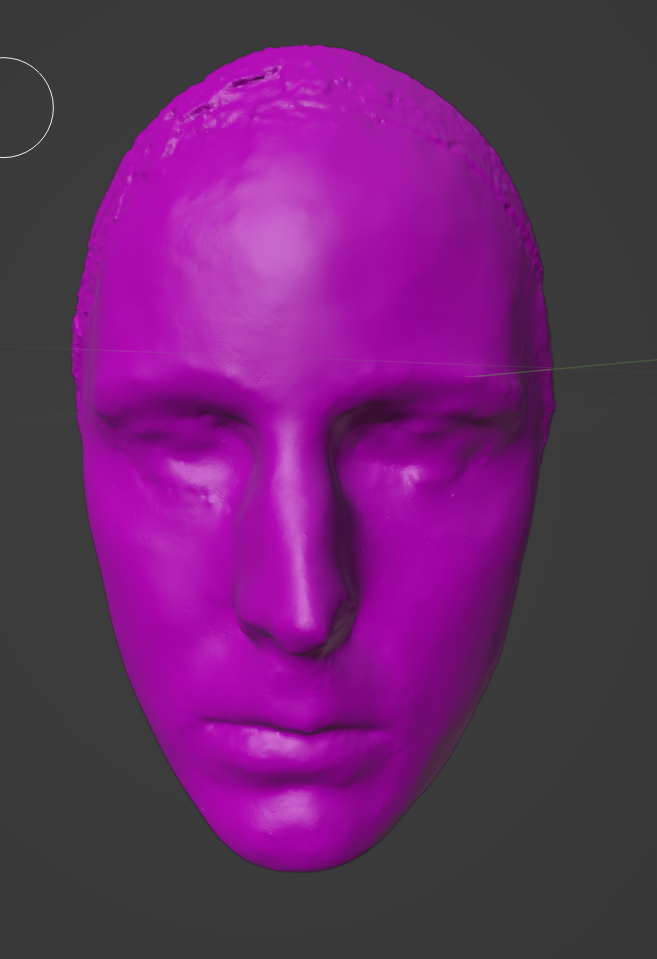
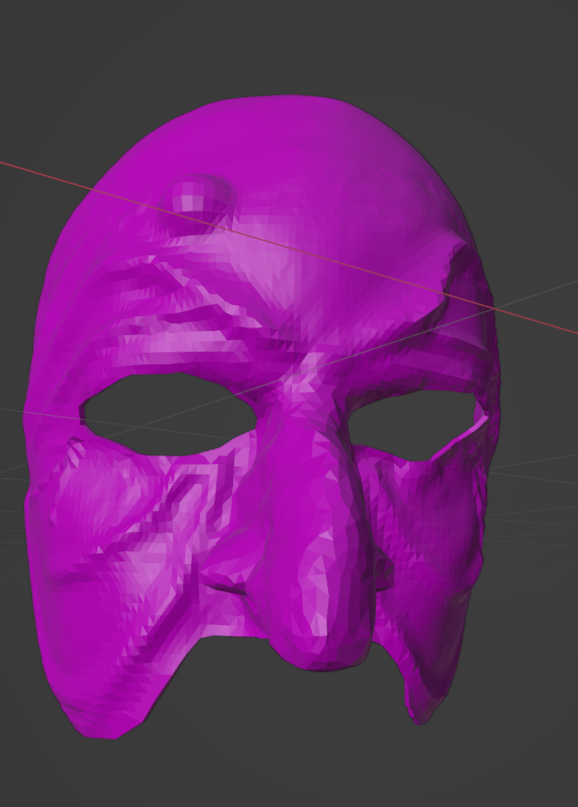
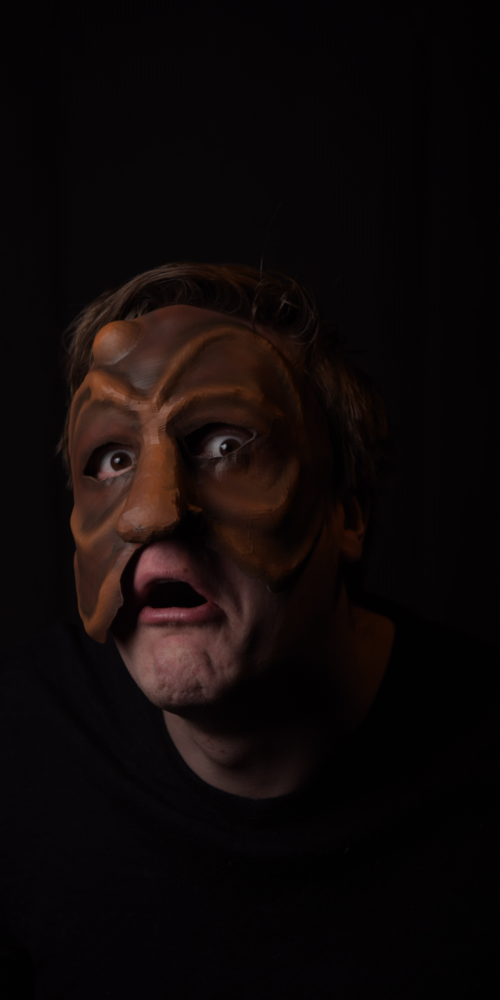

St.George Presents
Jeff is always hard at work, coming up with multiple projects. Here are some of the long term projects Jeff is working on.
Commedia Del Popolo
  Early in my career I fell in with a troupe of scoundrels who liked to perform Shakespeare outdoors in Commedia Masks. This was of course Oregon Adventure Theater who was my first troupe, and in many ways my greatest theatrical love. It was there that I fell in love with mask work.
Mask work is a lot like Shakespeare in a way. It has a framework that you work from but adhering to that framework too rigidly results in stifled creativity. This style of commedia is what I call Commedia Del Popolo; The People’s Commedia. I use the sprit of this comedia in everything I do, Teaching, Directing and of course Acting. Refining of the ‘Popolo Method’ as a performance style and methodology is a lifelong endeavor.
One of the barriers to all variations of commedia are the Masks. Jeff had the honor of working exclusively with Newman Masks in his formative years. Newman is a master craftsman and his masks are worth every penny… but it’s a lot of pennies. I want to get a mask into the hands of high school and college students without needing to write a grant. Pursuant to this I have been working on the fabrication of 3-D Models of classic commedia stock characters.
Soon these models will be posted online for anyone to use for free. Access to a 3d printer will become the only barrier and printers are becoming more and more available throughout the nation. Nearly all high schools and colleges have one and they are increasingly available in a public libraries.
You Too May Speak Good Words
A Video Series
At some point in my career, I felt I had plateaued and was not getting better and I did not know what to do about it. Workshops were not available to me, and a Masters program was out of the question, what I had access to were books. Lot’s and lot’s of books which is a blessing and a curse.
It is said, perhaps apocryphally, that there is more published every year about Shakespeare and his works than any other literary subject with the exception of the bible. True or not, there are thousands and thousands of books on subjects ranging from the treatment of gender constructs, to medical theory in the period, how texts were brought into the modern era, political intrigue, performance style, venue, construction, theology, philosophy… on and on and on. At the beginning of the journey it was totally overwhelming.
What did I want to learn… Only the stuff relevant too the actor. So much on Shakespeare is written for everyone under the sun except for the actor. I wanted my hunt to include compiling books that would be useful to my peers and “You Too May Speak Good Words” was born out of it..
“You Too May Speak Good Words” is a program that I built with the express intent of making Shakespeare Performance and Theory Training available to anyone who was like me. Anyone living somewhere without access to Workshops or for whom formal education was out of reach or unavailable.
It started as a video series and has now also become a workshop available by the same name. The video series so far has treated directly with Shakespearian performance books, doing deep dives into excellent training material and unpacking it for the viewer. But will also include a variety of different source materials for information relevant to the actors understanding of the text and form of Shakespeare’s work on the stage.